— Joseph Cooper, Interstellar
Timeline
Jun - Jul 2022
Platform
Mobile Application
Role
UI/UX Designer
Toolkit
Figma
Rover is an all-in-one delivery and moving service. Created for a fictionalized future in which the first colony on Mars has been established, it is the first application of its kind to offer cargo transport between Earth and the Red Planet.
Due to the nature of early passenger rocket models, colonists, short-term settlers, and tourists alike cannot reliably transport their civilian good with them. As a result, prospective travelers can be left frustrated by the lack of transparency and accessibility of shipping solutions.
Because no pre-existing delivery or moving companies offer services to Mars (yet), I investigated three indirect competitors offering similar services to those planned for Rover. In doing so, I was able to identify shortcomings in these competitors from which I could optimize my own designs.
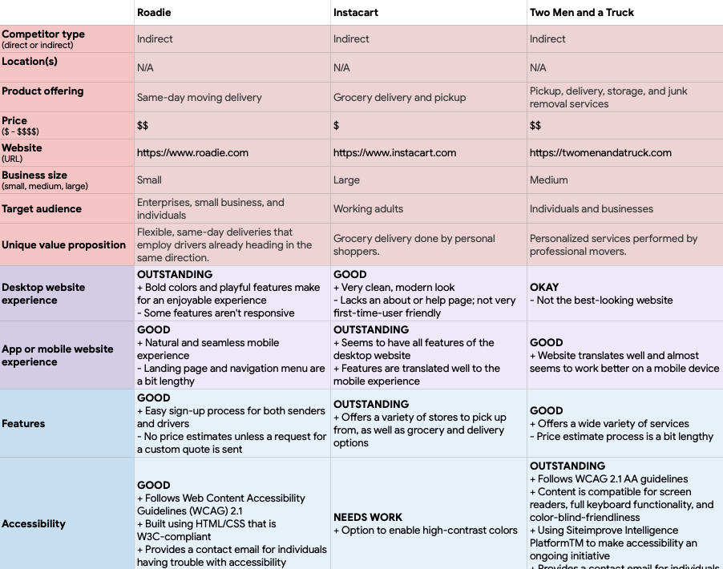After conducting some informal surveys and researching traveling trends among tourists (going to places on Earth) and astronauts (going to places in space), I discerned two archetypes that, used together, effectively encapsulated the scope of the intended audience for Rover.
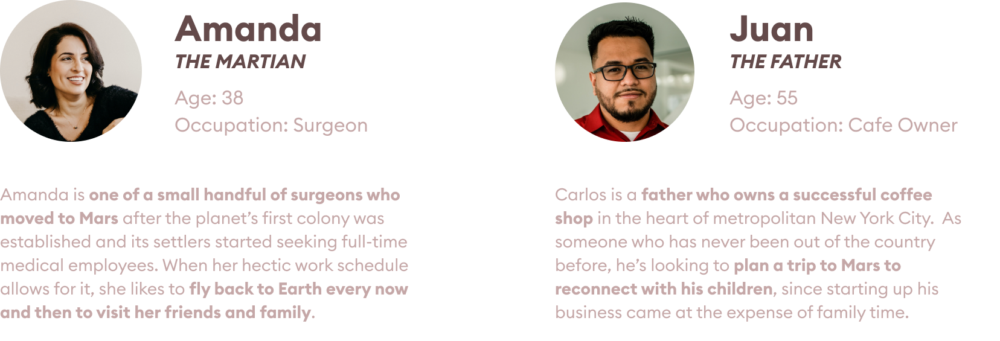Put together, my preliminary research gave way to three overarching themes in the needs of users:
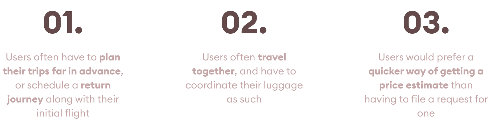As a final step before moving on to the official design process, I devised solutions aimed to implement in order to address the above takeaways:
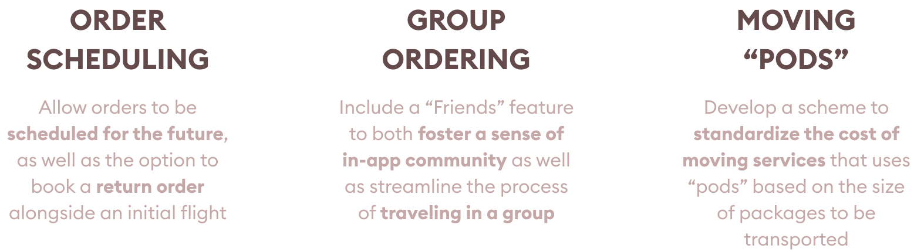I sketched different iterations of user flows in a close-up storyboard style, capturing the thought processes and emotional journey of the user while doubling as initial wireframes. Here are some of those sketches:
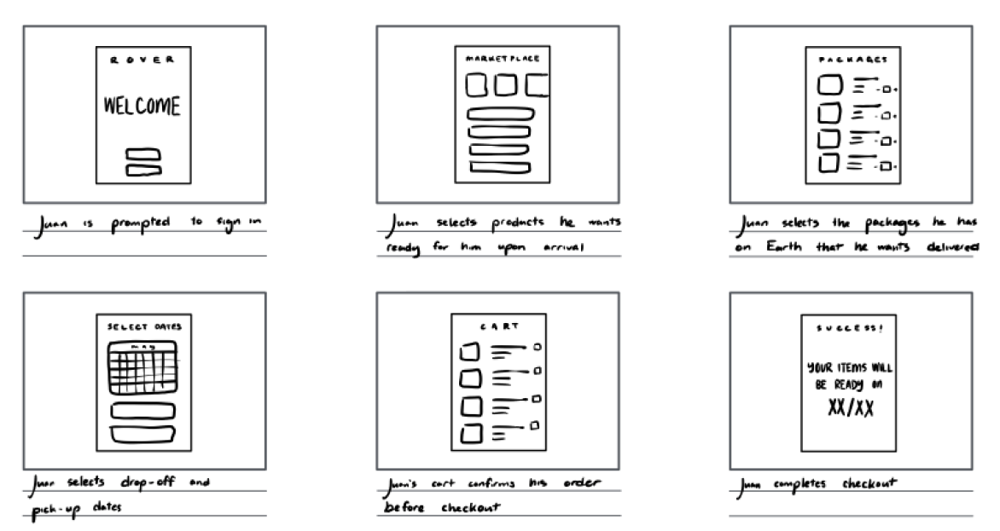After conducting some informal surveys and researching traveling trends among tourists (going to places on Earth) and astronauts (going to places in space), I discerned two archetypes that, used together, effectively encapsulated the scope of the intended audience for Rover.
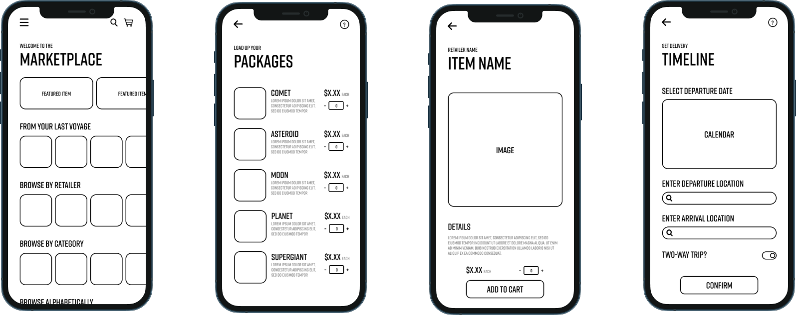 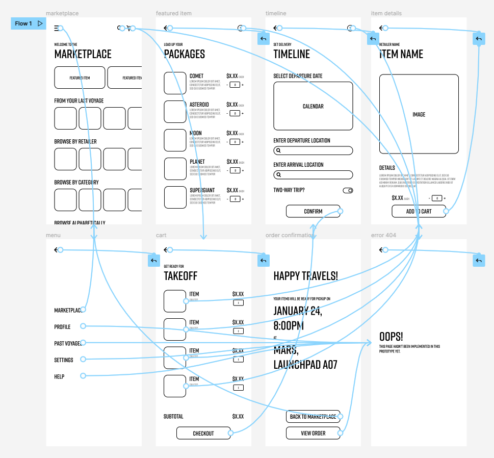Before finalizing my designs, I underwent a round of iteration with the help of five participants who I enlisted for a usability study. Findings that would go on to inform future design decisions included that...
I used the onboarding screen—the first thing the user sees—to set the tone for the rest of the application with bold sci fi-esque typography, glassmorphic components, and gradient hues to create a simple and futuristic first impression.
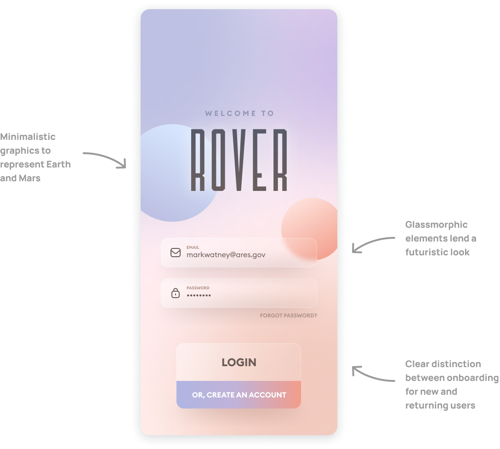The marketplace hub—rebranded to the Hangar to fit a space theme—is the app's central hub for ordering goods from retailers on Earth and on Mars. Designed with the unique nature of cross-planet ordering in mind, it serves as a personalized feed of the user's favorite goods and retailers from across planets.
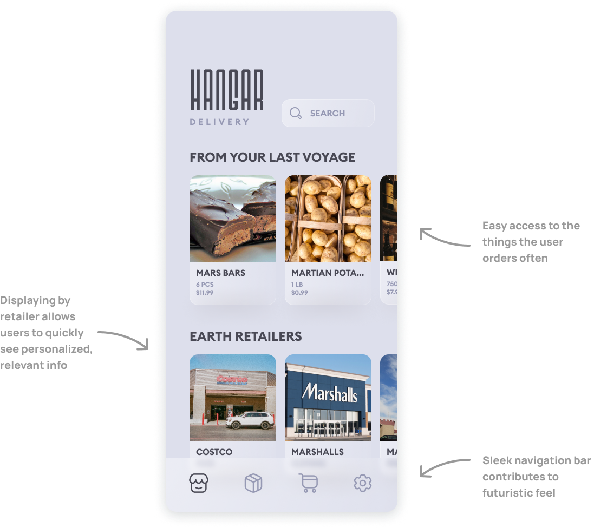The other half of the ordering interface, the Podbay, is for ordering shipments of furniture and other personal items across planets. Contextual inquiries revealed that the ideal moving system would involve pre-determined packages, rather than the common quote-requesting system.
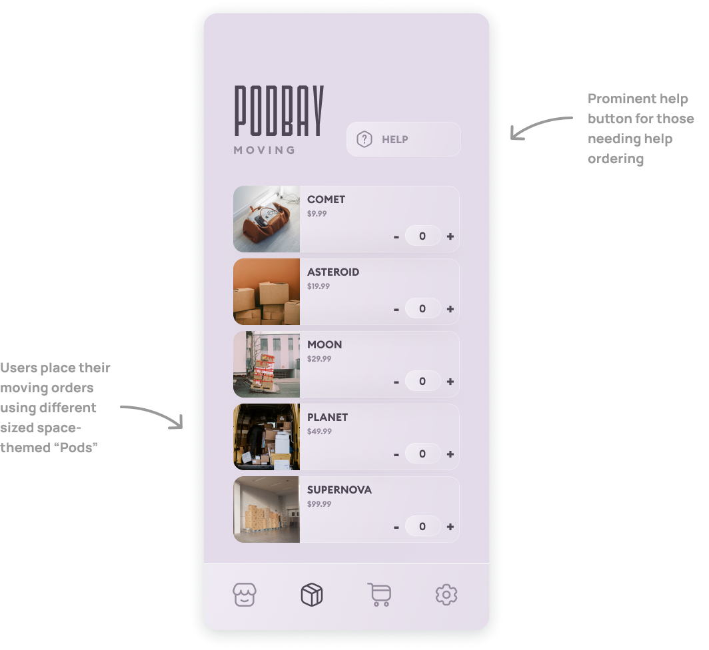Finally, I created a short checkout system: a feat that proved more challenging than expected, as it had to handle destinations on different planets, and be able to differentiate between any items and shipments that may be ordered together.
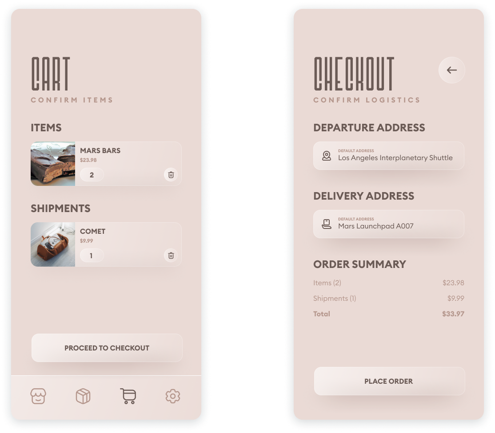Working on Rover as part of a certificate program was my first foray into the world of UX design. This, combined with the highly fictionalized nature of the app, led me to focus on svisual design, user experience/accessibility guidelines, and usability testing over user research (finding participants who plan on going to Mars any time soon would’ve been a futile effort).
Nevertheless, working on Rover project gave me a taste of what the world of UX entails, provided me with a springboard for future projects, and solidified my passion for this wonderful industry.
Next Case Study: UCLA CKI